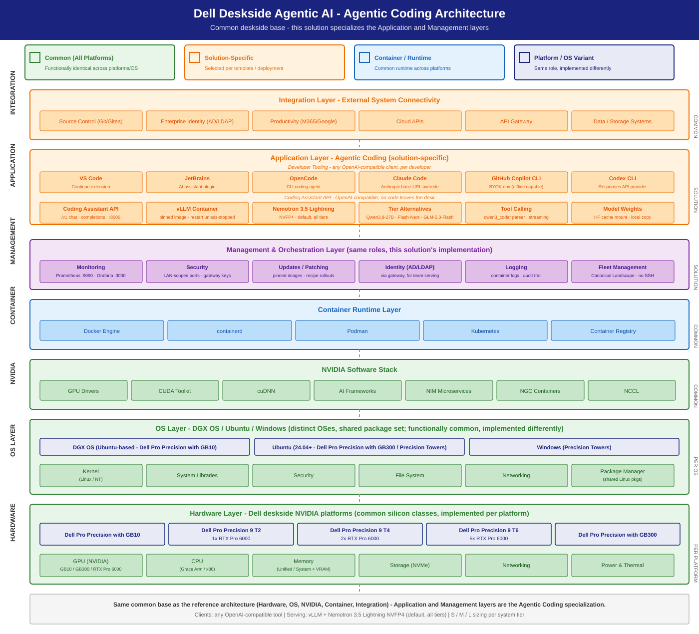

Agentic Coding Solution
A private, on-deskside AI coding assistant — code generation, explanation, refactoring, and agentic CLI/IDE workflows served locally on Dell hardware behind an OpenAI-compatible API.
Summary
Developers and data scientists want fast, private code assistance without sending source code to a public cloud. This solution serves a coding-capable LLM on a Dell deskside system (GB10 / Precision / GB300) and integrates with CLI agents and IDEs (VS Code, JetBrains) through the standard OpenAI-compatible endpoint. It wraps NVIDIA's CLI Coding Agent, Vibe Coding, and Local Coding Agent playbooks and the RTX Local AI playbook hub, with Dell S/M/L sizing and an IT-Admin deployment + management guide.
Personas
| Persona | What this solution gives them |
|---|---|
| IT Admin | One-command deploy, fleet/management guidance, identity & monitoring hooks, dev→prod scaling — see IT-Admin Guide. |
| Functional SME | "Which system for my team size?" — the S/M/L table below with expected throughput / concurrency. |
| AI Engineer | Nemotron default + tier-scaled alternative models, vLLM config, and IDE/CLI integration — see IDE Integration. |
Reference NVIDIA playbooks
| Playbook | Platform | What Dell adds |
|---|---|---|
| CLI Coding Agent | DGX Spark (GB10) | Dell system sizing, vLLM production config, fleet mgmt |
| Vibe Coding in VS Code | DGX Spark (GB10) | IDE integration guide for enterprise dev environments |
| Local Coding Agent | DGX Station (GB300) | L-tier sizing, multi-user app-host configuration |
| RTX Local AI hub | RTX PRO discrete GPUs (Precision towers) | T2/T4/T6 tier recipes and validation (vLLM, multi-GPU, fine-tuning playbooks) |
Architecture

This solution runs on the common deskside base — the Hardware, OS, NVIDIA software, container-runtime, and integration layers are identical to the base architecture. Agentic Coding specializes only the top two layers:

| Layer | In this solution |
|---|---|
| Integration | Source control (Git/Gitea) + enterprise identity (AD/LDAP) via the optional gateway; storage for model weights |
| Application | OpenAI-compatible coding assistant: IDE/CLI clients (VS Code, JetBrains, OpenCode, Claude Code, Copilot CLI, Codex CLI) → vLLM serving Nemotron 3.5 Lightning NVFP4 (S-tier default; Nemotron 3.5 Super VL is the M/L default), with per-tier alternatives |
| Management | Prometheus :9090 + Grafana :3000 serving dashboards, pinned-image recipe rollouts, Canonical Landscape fleet ops — see IT-Admin Guide |
| Container | Docker Engine (serving recipes); common runtime |
| NVIDIA | GPU drivers, CUDA, cuDNN, NGC containers; common stack |
| OS | DGX OS (GB10) / Ubuntu 24.04+; common |
| Hardware | S: Dell Pro Precision with GB10 / 9 T2 · M: 9 T4 · L: Dell Pro Precision with GB300 / 9 T6 |
A single vLLM container serves a coding model on the Dell deskside system, exposing
/v1/chat/completions and /v1/completions. CLI agents and IDE extensions connect
via the OpenAI client. Higher tiers add instances / tensor-parallelism and an
optional gateway for multi-user serving.
Developer IDE / CLI agent
│ (OpenAI-compatible API, :8000)
▼
vLLM container ──► Coding model (Nemotron default)
│
Dell deskside system (S: GB10/T2 · M: T4 · L: GB300/T6)
S / M / L sizing
Two axes wear the S/M/L label: the sizing tier (system) and the model pick for that tier. Each sizing tier pins one default model and carries one tier-scaled alternative — a larger, same-API model swapped in per workload (see Model recommendation for recipes and numbers).
| Tier | Dell system | Model (default · alt) | Quant | vLLM config | Expected (200/200 chat) |
|---|---|---|---|---|---|
| S | Dell Pro Precision with GB10 (128 GB) | Nemotron-3.5-Lightning-30B-A3B · alt Qwen3.8 27B (+ MTP) | NVFP4 | --moe-backend marlin + VLLM_NVFP4_GEMM_BACKEND=marlin + --kv-cache-dtype fp8 --max-model-len 200000 --max-num-seqs 32 --gpu-memory-utilization 0.7 |
validated on GB10: ~66 out tok/s @ c20 (agent-workflow shape, ISL 60k/OSL 1k); chat-shape reference sweep in Validation |
| S | Precision T2 (1× RTX PRO 6000) | Nemotron-3.5-Lightning-30B-A3B · alt Qwen3.8 27B (+ MTP) | NVFP4 | --moe-backend marlin + VLLM_NVFP4_GEMM_BACKEND=marlin + --kv-cache-dtype fp8 --max-model-len 200000 --max-num-seqs 512 --gpu-memory-utilization 0.9 |
5,352 chat / 399 agent tok/s (doc-reported; peak chat / agent @ c20) |
| M | Precision T4 (2× RTX PRO 6000, 192 GB) | Nemotron 3.5 Super VL · alt Qwen3.8-Flash-Next | NVFP4 | multi-instance or TP=2; higher concurrency | 168 agent / 1,814 chat tok/s @ c32 / c64 (Super VL TP=2, measured on a T6 host — same GPU pairing) — small team (handful of concurrent devs) |
| L | Dell Pro Precision with GB300 (252 GB HBM3e) | Nemotron 3.5 Super VL · alt GLM-5.3-Flash | NVFP4 | single instance, --gpu-memory-utilization 0.85 --max-model-len 262144 --max-num-seqs 128 |
team / app-host — 225 agent / 3,694 chat tok/s @ c32 / c64 (measured, Super VL) |
| L | Precision T6 (5× RTX PRO 6000, 480 GB) | Nemotron 3.5 Super VL · alt GLM-5.3-Flash | NVFP4 | 2 × TP=2 behind LiteLLM (the measured configuration) or 1 instance per GPU + gateway | team / app-host — 252 agent / 2,020 chat tok/s @ c32 / c64 (measured, 2 × TP=2) |
The S row is backed by a measured vLLM benchmark on a GB10 system — see Validation below. M/L rows carry measured serving numbers for the models they name; the concurrency figures are planning guidance for your pilot to tune.
Scaling decision table
When to move to the next tier — based on measured S-tier performance:
| Condition (observed at current tier) | Action |
|---|---|
| TTFT p95 < 500 ms at your peak concurrency | Stay — current tier has headroom |
| TTFT p95 > 1 s at peak concurrency | Scale up — move to next tier |
| Waiting-request queue sustained > 0 | Scale up — requests are queuing |
| Need > 8 concurrent coding sessions | Move S → M (multi-instance or TP=2 on 2× RTX PRO 6000) |
| Need > 16 concurrent coding sessions | Move M → L (multi-instance or GB300) |
| Need more context than 200K, or a larger model | Move to L (GB300 Super VL serves a 262K window; GLM-5.3-Flash alternative on GB300/T6) |
S-tier reference data (GB10, 200/200 chat shape on the prior reference model):
| Concurrent devs | TTFT (ms) | ITL (ms) | Per-session output tok/s | Aggregate output tok/s | UX quality |
|---|---|---|---|---|---|
| 1 | ~113 | ~16.7 | 58 | 58 | Excellent |
| 4 | ~267 | ~24.1 | ~40 | 158 | Good |
| 8 | ~348 | ~33.5 | ~29 | 228 | Acceptable |
| 16 | ~583 | ~47.1 | ~20 | 321 | Marginal (move to M) |
Multi-instance guidance (L tier): on the Precision T6 (5× RTX PRO 6000), run one vLLM instance per GPU behind a LiteLLM proxy for load balancing. This avoids tensor-parallelism over PCIe (slow) and gives 5× the single-GPU capacity. See IT-Admin Guide.
Measured agentic capacity by tier (agent shape: 60k-token prompts, 1k output)
Every tier-and-model combination with a measured agent-shape ladder, one row each.
The sessions columns give the concurrency at which per-session output (aggregate / C,
log-log interpolated on the measured ladder) crosses the stated floor; aggregate is
quoted at c32 unless noted. Raw ladders in tests/data/,
machine-readable record tests/data/latest/sizing.yaml;
the Recipe Configuration panel in the IT-Admin Guide shows the
full ladder for any platform and model.
| Tier | Platform and topology | Model | Sessions at 20 tok/s | Sessions at 10 tok/s | Aggregate tok/s at c32 |
|---|---|---|---|---|---|
| S | GB10, 1 instance | Nemotron 3.5 Lightning | ~1.9 | ~3.8 | 38 at c4 (ladder ended at c4) |
| M | T4 (2 GPUs), 1 instance TP=2 | Nemotron 3.5 Super VL | ~6 | ~15 | 168 |
| L | T6 (4 of 5 GPUs), 2 × TP=2 behind LiteLLM | Nemotron 3.5 Super VL | ~11 | ~24 | 252 |
| L | GB300, 1 instance | Nemotron 3.5 Super VL | ~10 | ~22 | 225 |
| L | GB300, 1 instance | Nemotron 3.5 Lightning | ~17 | ~33 | 332 |
Agent-shape prompts are prefill-heavy, so a GB300 instance is no faster than two TP=2 replicas on a tower for this shape; pick the topology per workload (topology).
How to read these numbers. They are hardware concurrency at a responsiveness
floor — how many simultaneous agent sessions a platform sustains above the floor.
Translating sessions into seats is a team-shape judgement (desk coverage,
utilisation, sessions per person), not a measured figure: make it in your pilot
plan, and compute cost from your own cloud rate, hardware price, and the
utilisation the tokenomics dashboard measures
(monitoring/, included with every recipe).
Alternative models (Qwen3.8-Flash-Next, GLM-5.3-Flash, Qwen3.8 27B) publish their
serving-verification numbers in the Inference Stack.
Traceability. Scripts, data, and tests are in tests/;
tests/aiperf/ holds the ladder configuration and the exact commands.
Model recommendation
- Default: Nemotron family, scaled per tier. On S:
nvidia/NVIDIA-Nemotron-3.5-Lightning-30B-A3B-NVFP4(validated on GB10: marlin MoE + NVFP4 GEMM backends, ~66 out tok/s @ c20 on agent-workflow load). On M and L: Nemotron 3.5 Super VL (default;recipes/precision/vllm/docker-nemotron-3.5-super-vl-nvfp4.sh,recipes/gb300/vllm/docker-nemotron-3.5-super-vl-nvfp4.sh; Lightning at higher concurrency / multi-instance is the measured alternative). MoE, NVFP4, tool-calling capable, reasoning model — give clientsmax_tokens >= 512(smaller budgets are eaten by the thinking trace). - Alternatives (one per tier, same OpenAI-compatible API):
- Qwen3.8 27B (NVFP4 + MTP) — S-tier alternative on GB10: dense 27B
NVFP4 with MTP speculative decode baked in
(
--speculative-config '{"method":"mtp","num_speculative_tokens":2}'), full 262K context with FP8 KV; ~62–65 out tok/s single-stream measured on GB10. Recipe:recipes/gb10/vllm/docker-qwen3.8-27b-nvfp4.sh. Same reasoning-model client rule:max_tokens >= 512. - Qwen3.8-Flash-Next (NVFP4) — M-tier alternative: 125B-total / ~6B-active
MoE with MTP ×3 and the 51B n-gram table CPU-offloaded
(
--engram-config '{"cpu_offload":true}', needs ≥128 GB host RAM), native 262K context. Serving verified (chat + tool calling pass; ~310 out tok/s single-stream spot check on a warm instance). Recipe:recipes/precision/vllm/docker-qwen3.8-flash-next-nvfp4.sh. - GLM-5.3-Flash (NVFP4) — L-tier alternative on GB300: 320B-total /
18B-active MoE, ~181 GiB NVFP4 on one 252 GB GB300 with FP8 KV, 262K
context,
glm47tool +glm45reasoning parsers. Serving verified (chat + tool calling pass; ~111 out tok/s single-stream spot check). Recipe:recipes/gb300/vllm/docker-glm-5.3-flash-nvfp4.sh.
Refreshed as new open-weight coding models are released. Last updated 10/16/2026.
Inference stack
vLLM (preferred). OpenAI-compatible, production-grade, the basis for all sizing benchmarks. Ollama is the developer quick-start reference; NIM is the containerized/enterprise-support option. See Inference Stack & Models.
Deployment
S-tier (GB10), one command:
# Serve the default coding model on a Dell deskside system powered by NVIDIA GB10
recipes/gb10/vllm/docker-nemotron-3.5-lightning-nvfp4.sh --port 8000
# Verify
curl -s http://localhost:8000/v1/models
# Smoke-test a completion (reasoning model: keep max_tokens >= 512)
curl -s http://localhost:8000/v1/chat/completions \
-H 'Content-Type: application/json' \
-d '{"model":"nvidia/nemotron-3.5-lightning","messages":[{"role":"user","content":"Write a Python function to reverse a string."}],"max_tokens":1024}'
Other platforms (Precision T2/T4, GB300): see the recipe catalog.
Full setup/management/scaling: IT-Admin Guide. IDE & CLI agent integration: IDE Integration. Fleet rollout without SSH (Canonical Landscape): Fleet Deploy via Landscape.
Management environment
- Identity: front the endpoint with the org's gateway / reverse proxy for AD/LDAP-backed auth (app-host / multi-user tiers).
- Monitoring: scrape vLLM
/metricswith Prometheus; Grafana dashboards for tokens/sec, TTFT, queue depth. - Fleet: containerized deploy (Docker/Podman or NIM) for reproducibility; scale dev→prod by adding instances (M/L) behind the gateway. For fleets of enrolled Ubuntu machines, roll the recipes out centrally with Fleet Deploy via Landscape (SSH-less, audited via Landscape activity log).
Validation (aiperf)
S tier chat validated on a Dell Pro Precision with GB10 with the prior reference
model (the shipping default is Lightning —
its GB10-validated config and agent-shape numbers are in the recipe header) —
a clean interactive-chat (200/200) sweep across the 1→16 concurrency ladder,
0 errors, using the stable serving config (--moe-backend cutlass +
--max-num-seqs 16 + prefix caching on the Dell GB10 vLLM build):
| Concurrency | TTFT (ms) | ITL (ms) | Per-session output tok/s | Aggregate output tok/s | Req/s |
|---|---|---|---|---|---|
| 1 | 113 | 16.7 | 58 | 58 | 0.29 |
| 4 | 267 | 24.1 | ~40 | 158 | 0.79 |
| 16 | 583 | 47.1 | ~20 | 321 | 1.61 |
- Resolved: the earlier stock-image NVFP4 MoE instability under concurrency is
fixed by pinning the MoE backend (
cutlasson the Dell GB10 build used for this sweep; the shipping Lightning recipes usemarlinon public images).
Dependencies & Risk factors
- Dependencies: NVIDIA CLI Coding Agent playbook; vLLM on GB10; Nemotron coding model availability; Dell GB10 hardware.
- Risk factors: vLLM-on-GB10 NVFP4 stability requires an explicit MoE backend
pin (
cutlasson the Dell GB10 build;marlinon the public-image Lightning recipes); model recommendations evolve with the Nemotron family and new open-weights coding models.